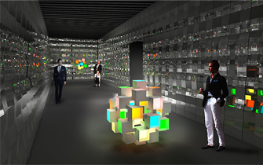

Destaque: Evento ganha painel gigante de LED orgânico.
Centenas de telas de 14 cm compõem grande mural eletrônico.
Tecnologia permite o ajuste de cores, inclusive dos tons de branco.

Durante o evento de design no Fuori Salone, em Milão, que acontece de 12 a 17 de abril a Verbatim
apresenta os primeiros painéis de iluminação de LED orgânico (OLED) comercialmente disponíveis no mercado.
Os displays OLED de 14x14 cm serão criados em parceria com o designer de iluminação Satoshi Uchihara,
responsável pelas instalações do World Heritage Site, e vão incorporar um dos maiores painéis OLED do mundo
Chamados de VELVE, os OLEDs da Verbatim produzem iluminação de alta qualidade, suave e colorida,
com visual exuberante e permitem que os projetistas expressem sua criatividade de diferentes formas.
Brasil é o 4º país que mais compra computadores.
Um estudo divulgado pela IDC Brasil revelou que foram vendidos
13,7 milhões de computadores em 2010 no país, sendo 55% desktops e 45% notebooks.
Empresa dos EUA desenvolve 1º 'beija-flor-robô'.
Uma empresa da Califórnia, nos Estados Unidos, apresentou o primeiro "robô" em forma
de beija-flor que pode ser controlado remotamente para voar como um pássaro de verdade.